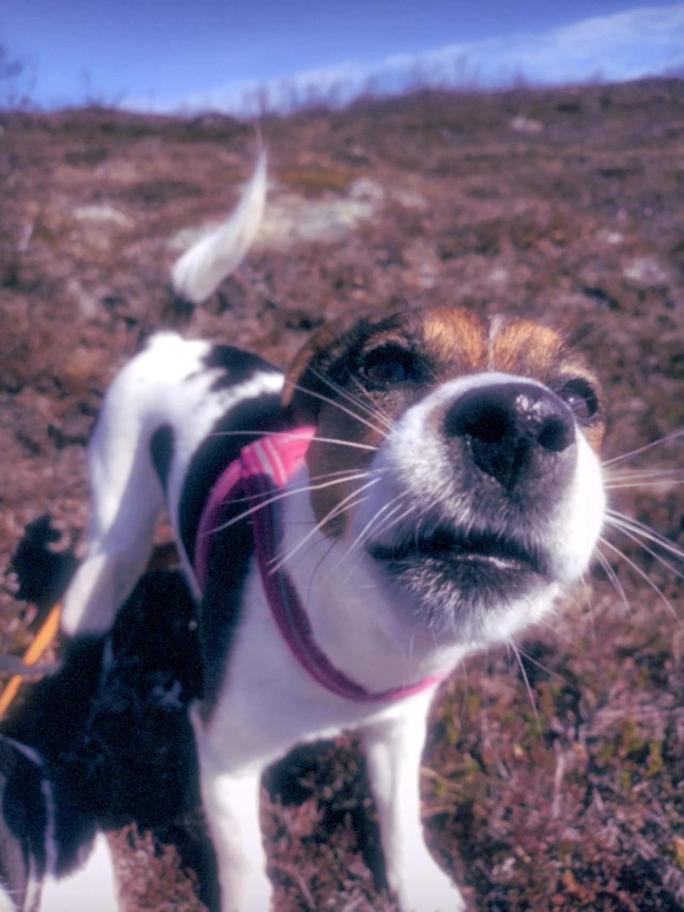

THE DREAM
You have been here before.

LOST PLACES
A room you almost remember.
The door was open last time.
FRAGMENTS
Some things remain after waking.
Some things do not.
You have been here before.

A room you almost remember.
The door was open last time.
Some things remain after waking.
Some things do not.